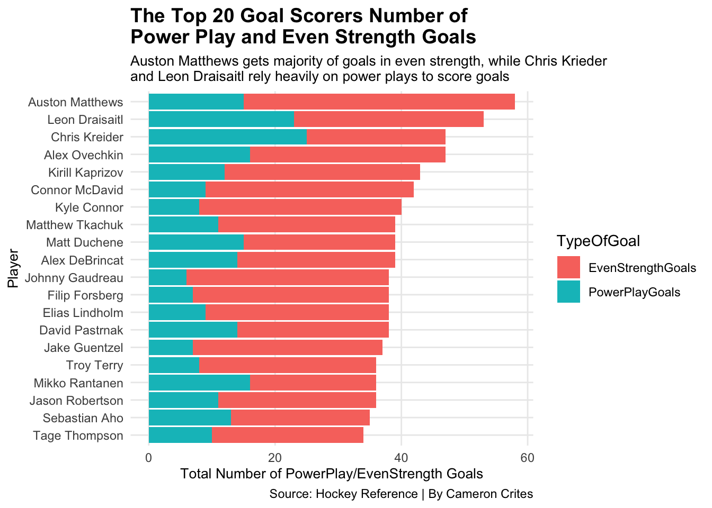

| The Top 10 Players in Percentage of Points that come from Goals | ||||
|---|---|---|---|---|
| Chris Kreider dominates the rest of the league, as most of his points come from goals | ||||
| Player | Team | Gls | PTS | Percentage of Points that are Goals |
| Chris Kreider | NYR | 50 | 72 | 69.44444 |
| Troy Terry | ANA | 36 | 63 | 57.14286 |
| Tage Thompson | BUF | 36 | 63 | 57.14286 |
| Auston Matthews | TOR | 58 | 102 | 56.86275 |
| Alex Ovechkin | WSH | 48 | 87 | 55.17241 |
| David Pastrnak | BOS | 38 | 71 | 53.52113 |
| Alex DeBrincat | CHI | 39 | 73 | 53.42466 |
| Leon Draisaitl | EDM | 54 | 105 | 51.42857 |
| Jason Robertson | DAL | 36 | 70 | 51.42857 |
| Filip Forsberg | NSH | 38 | 75 | 50.66667 |
| By: Cameron Crites | Source: Hockey Reference | ||||
Over the course of the last few years, the National Hockey League has been blessed with some incredible talent, and with incredible talent, comes debate.
One common debate in every major sports league is the question of, “Who is the Best Player?” and thankfully, there is not much of a disagreement for NHL fans on who that is.
Connor McDavid. It wouldn’t take much research and debate to convince a common hockey fan that McDavid is the best of the bunch.
With that being said, because there is no debate on who the best player in the NHL is, fans have replaced that conflict with a new one, who is the best “Goal Scorer” in the league? That is a more complex and disputable question.
The simple answer to this question would be Auston Matthews of the Toronto Maple Leafs, who leads the league in goals and shots. But is he statistically the best? Let’s find out.
The players that will be used in this experiment will be the top 20 goal scorers in the NHL this season, because in order to be in the conversation of the best goal scorer in the NHL you should be in the top 20 of that category.
In order to solve this question, the first statistic that needs to be evaluated is who scores goals as a majority of their points?
For those who don’t know how NHL scoring works, there are two ways in which players can receive points: goals and assists. For this experiment, goals will be the focus, and what needs to be figured out first is what players score goals as a majority of their points, rather than assists.
As seen above, Chris Kreider of the New York Rangers is well ahead of anyone else in the NHL in percentage of points that come from goals.
Now some fans would argue that his percentage is inflated because of his lack of assists, but with 50 goals, Kreider has established himself as a top five goal scorer in the league, so the fact that his assist numbers are low does not affect his ability to score the puck.
Moving forward, another key stat in finding the best goal scorer in the NHL is shooting percentage. How often are players scoring the puck when they shoot it?
One again, the most impressive takeaway is none other than Chris Kreider, a player who is never discussed in the debate of best goal scorers in the NHL.
Kreider and Leon Draisaitl of the Edmonton Oilers sit well on this chart as players who are in the top three in the NHL in goals while not being in the top five in shots. Meanwhile, highly-toubted goal scorers Alex Ovechkin and David Pastrnak are top three in the league in shots while not having as many goals as Kreider, Draisaitl or Auston Matthews.
Speaking of Matthews, it was mentioned earlier that the Maple Leafs star leads the league in shots and goals by a large margin, but is it fair to credit his heavy goal amounts to the number of shots he takes?
Well, with a shooting percentage lower than Draisaitl and Kreider, that would be a fair argument to make.
The last factor of the game that must be analyzed before deciding the best goal scorer in the NHL is which players are scoring goals in power-plays vs. when they’re in even-strength.
Because scoring goals with one man up is easier then in even-strength, the best goal scorers should be able to consistently score in both situations. So let’s take a look at which players can score the puck most effectively in even-strength.

This is where the Auston Matthews argument is most effective. Matthews, while scoring a large amount during the power-play, gets the majority of his goals through even-strength opportunities.
Now what about Kreider and Draisaitl? Well, a much different story to say the least.
Both players rely heavily on power-plays to score goals, especially Kreider, who has scored more power-play goals this year than even-strength goals, which is unheard of.
So why is it that Kreider and Draisaitl score more often when on the power-play? The main reason for this would be their teammates, and ultimately, it’s most likely the players teammates that will decide this debate.
Chris Kreider and Leon Draisaitl both have the pleasure of being on the same even-strength and power-play lines as elite passers of the puck. Kreider has Artemi Panarin and Adam Fox, who are both top 15 in the league in assists, while Draisaitl has Connor McDavid as his running-mate, who is second in the league in assists.
Auston Matthews, unlike the other two, is widely considered to be the best player on his team. Yes, he has some great players around him, Mitch Marner and John Tavares to name a couple, but whether those players affect his ability to score goals like Kreider and Drasaitl’s linemates do is unlikely.
Now, with all of this being said, with all of the statistics utilized, who is the best goal scorer in the National Hockey League?
Well, there’s still not exactly a clear answer.
One clear answer that was figured out with this data is that Chris Kreider is by far the most underrated goal scorer in the NHL, but is he the best?
It depends on what you’re looking for. If you’re looking for a player that shoots at a high percentage and can score easily on the power-play, then Chris Kreider would be the choice. Now if the power-play doesn’t matter as much to you and you value the player’s ability to score goals while being the star of his team, than Auston Matthews would make sense.
Ultimately, there may never be a clear answer to this question, but what can be acknowledged is the sheer amount of goal scoring talent in the NHL today, and how each player has their own unique set of strengths when it comes to scoring the puck.
The code that generated these graphs can be found [here] (https://github.com/cameroncrites/Notebook2/blob/main/project2.Rmd)